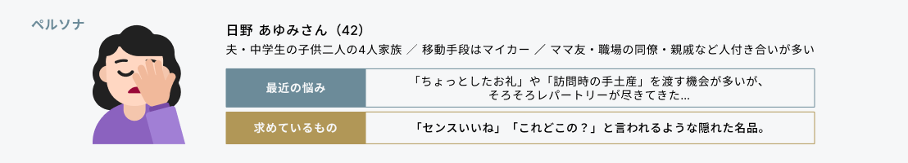
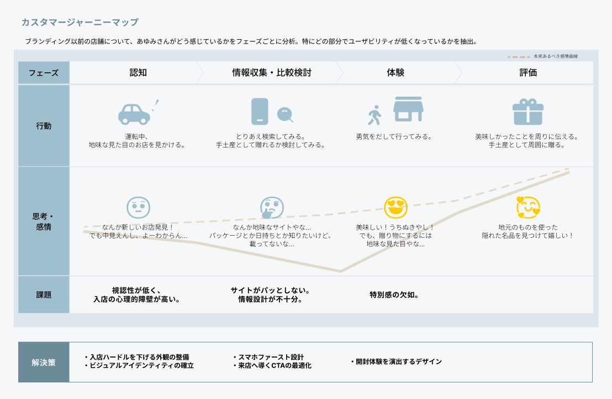
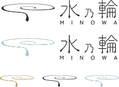
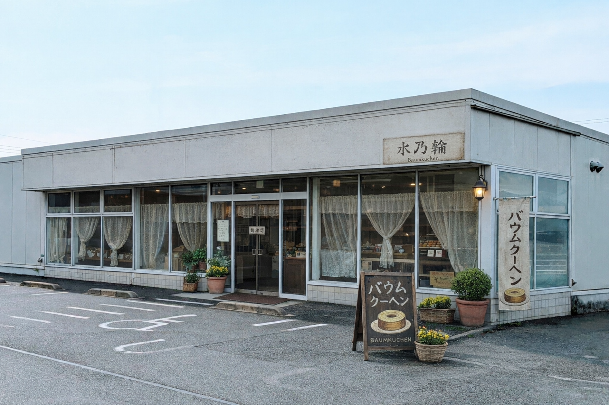
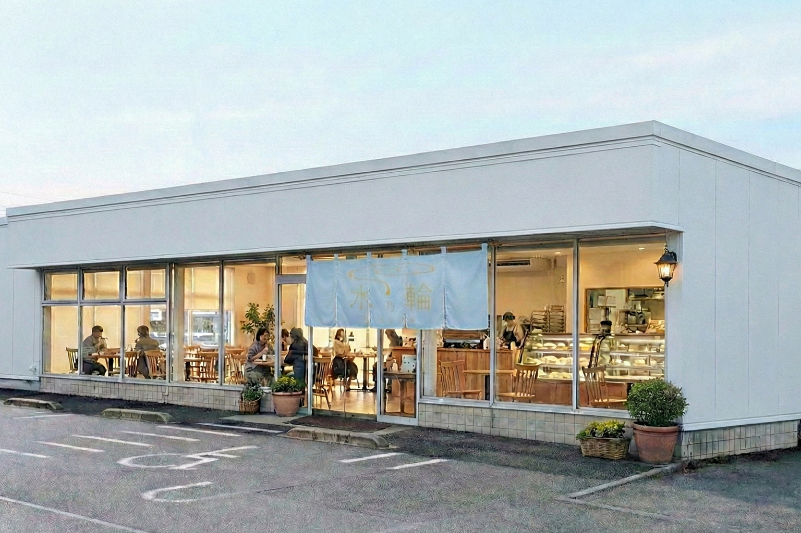
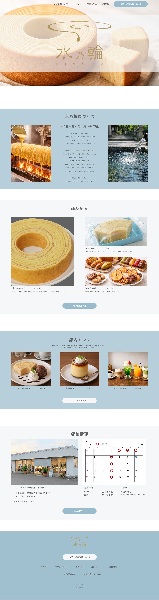
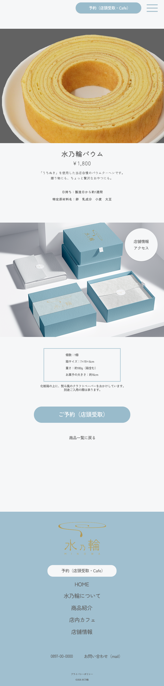

バウムクーヘンカフェ「水乃輪」リブランディングプロジェクト
地元素材を使用したお菓子とデザインの組み合わせで、シビックプライドを醸成。
地域に定着するVIを構築。
制作時間
18時間 ／ 企画8時間・制作10時間
制作期間
2026年1月
制作体制
個人
制作物
ロゴ、パッケージ、店舗看板、メニュー表、Webデザイン
背景と課題
コンセプト
店舗外観
愛媛県西条市にある、バームクーヘンを主軸とした店舗の売上向上を、デザインによって目指しました。
地方のお菓子屋さんの現状を調査し、①商品・コンセプトの弱さ、②発信力不足、③コンビニ商品との差別化を課題として挙げました。
課題の解決策として地域資源を使用していることに着目し、それをブランドのコアストーリーに据えてシビックプライドを醸成すること、顧客体験を単なる買い物から特別な購入体験へ昇華することを目指しました。
ターゲットを地元のお母さん世代に設定し、ターゲットの横のつながりに解決策を探りました。


シビックプライドと脱・生活感を与えるデザインをコンセプトに設定しました。
地域の資源である水（うちぬき）を使用していることを情緒的価値の核に据え、ターゲットが自信を持って選べるブランドを目指しました。

既存の店舗は、外から中の様子が見えにくく、入りにくい印象がありました。車移動がメインのターゲットが、店舗前を通った際にも店内が分かりやすいようにし、認知の時点での離脱を回避できるようにしました。
before
Webデザイン

after
ブランドカラーを基調に、写真を大きく使用することでターゲットに直感的に商品の良さが伝わるよう意識したデザインにしました。
PCサイト

SPサイト